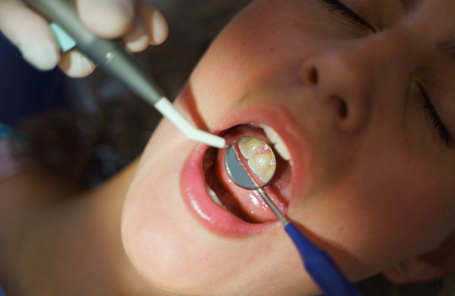

<!-- similar -->
<section class="mil-soft-bg">
  <div class="container mil-p-120-60">
    <div class="row align-items-center mil-mb-30">
      <div class="col-lg-6 mil-mb-30">
        <h3 class="mil-up">Blog similaires :</h3>
      </div>
      <div class="col-lg-6 mil-mb-30">
        <div class="mil-adaptive-right mil-up">
          <a href="/main/blog" class="mil-link mil-dark mil-arrow-place">
            <span>Voir Tous </span>
          </a>
        </div>
      </div>
    </div>
    <div class="row">
      <div class="col-lg-6">
        <div class="mil-blog-card mil-mb-60">
          <div class="mil-cover-frame mil-up">
            
          </div>
          <div class="mil-post-descr">
            <h4 class="mil-up mil-mb-30">Les Bienfaits du Détartrage</h4>
            <p class="mil-post-text mil-up mil-mb-30">
              Saviez-vous que même si vous vous brossez les dents régulièrement,
              vous ne pouvez pas atteindre toutes les zones de votre bouche ?...
            </p>
            <div class="mil-link mil-dark mil-arrow-place mil-up">
              <a routerLink="/main/detartrage">Voir plus</a>
            </div>
          </div>
        </div>
      </div>

      <div class="col-lg-6">
        <div class="mil-blog-card mil-mb-60">
          <div class="mil-cover-frame mil-up">
            
          </div>
          <div class="mil-post-descr">
            <h4 class="mil-up mil-mb-30">
              L'importance de la Prévention Dentaire
            </h4>
            <p class="mil-post-text mil-up mil-mb-30">
              si la clé de votre santé bucco-dentaire ne résidait pas seulement
              dans les traitements chez le dentiste, mais dans votre quotidien
              ...
            </p>
            <div class="mil-link mil-dark mil-arrow-place mil-up">
              <a routerLink="/main/prevention-dentaire">Voir plus</a>
            </div>
          </div>
        </div>
      </div>
    </div>
  </div>
</section>
<!-- similar end -->
